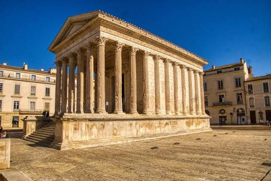

Maison Carrée
de NîmesTemple romain · UNESCO 2023


⟹ Sites Emblématiques ⟸
Un temple pour le forum de Nemausus. La Maison Carrée est édifiée au tournant de notre ère, sous le règne d’Auguste, à l’extrémité sud du forum de la colonie de Nemausus. Le temple se dressait au centre d’une vaste place entourée de portiques, cœur de la vie politique, judiciaire et commerciale de la cité. Il est aujourd’hui le seul élément encore debout de cet ensemble, dont les fondations ont été mises au jour par les fouilles archéologiques.
Dédié aux princes de la jeunesse. Le temple était consacré à Caius et Lucius César, petits-fils d’Auguste qu’il avait adoptés pour en faire ses héritiers et qui portaient le titre de « princes de la jeunesse ». Tous deux meurent jeunes, en 2 et 4 de notre ère. Le monument s’inscrit dans le culte impérial, qui associait la famille d’Auguste à la religion civique et affirmait la fidélité de la colonie envers le pouvoir de Rome.
Une dédicace retrouvée grâce aux trous. Les lettres de bronze de la dédicace, fixées sur la frise et l’architrave de la façade, ont disparu depuis longtemps. En 1758, le savant nîmois Jean-François Séguier réussit pourtant à reconstituer le texte en étudiant l’emplacement des trous de fixation des lettres. Cette méthode ingénieuse, pionnière pour l’épigraphie, a permis d’identifier les dédicataires du temple. Certains chercheurs pensent qu’une première dédicace aurait pu concerner Agrippa.
Un chef-d’œuvre d’architecture classique. Le temple, long d’environ 26 mètres et large de 15, s’élève sur un podium de près de 3 mètres, accessible par un escalier frontal de quinze marches. Sa façade est hexastyle, avec six colonnes corinthiennes, et un profond portique précède la cella. Sur les côtés et à l’arrière, les colonnes sont engagées dans les murs : ce plan, dit pseudo-périptère, donne l’illusion d’une colonnade continue tout en offrant un espace intérieur plus vaste.

Le modèle de Rome. L’architecture et le décor s’inspirent directement des grands temples augustéens de Rome, comme celui de Mars Vengeur sur le forum d’Auguste ou celui d’Apollon in Circo. La frise ornée de rinceaux d’acanthe, les chapiteaux corinthiens et les corniches finement sculptées témoignent du savoir-faire d’ateliers formés aux modèles de la capitale. La Maison Carrée est ainsi l’un des meilleurs exemples de la diffusion de l’art officiel romain dans les provinces.
Pourquoi « Maison Carrée » ? Le nom apparaît au XVIe siècle. À l’époque, on appelait « carré » tout bâtiment à angles droits, et un rectangle était qualifié de « carré long ». Le mot « maison » rappelle que, depuis longtemps, l’édifice n’était plus perçu comme un temple, mais comme un bâtiment utilisé pour d’autres fonctions.
Mille usages après l’Antiquité. C’est grâce à une occupation ininterrompue que le temple a survécu. Au Moyen Âge, il sert notamment de lieu de réunion aux consuls de la ville, puis devient une résidence privée, et même, selon les sources, une écurie. Au XVIIe siècle, les moines augustins en font leur église. Chaque nouvel usage a entraîné des modifications, mais aussi l’entretien de l’édifice, qui a évité son démantèlement comme carrière de pierre.
L’admiration des rois et des voyageurs. Dès la Renaissance, la Maison Carrée fascine. On raconte que Colbert aurait envisagé de la faire démonter pierre par pierre pour la transporter à Versailles. Les voyageurs du Grand Tour la décrivent comme le temple romain le plus parfait qu’on puisse voir hors d’Italie, et les architectes viennent en relever les proportions.
Thomas Jefferson et le Capitole de Virginie. En 1787, Thomas Jefferson, alors ministre des États-Unis en France, visite Nîmes et reste des heures à contempler le temple. Enthousiaste, il le prend pour modèle du Capitole de l’État de Virginie, à Richmond, qui donne naissance au style néoclassique américain des bâtiments publics. En France, l’église de la Madeleine, à Paris, voulue par Napoléon comme un temple à la gloire de la Grande Armée, s’en inspire également.
De la Révolution au musée. Après la Révolution, l’édifice abrite un temps les archives du département. En 1823, il devient un musée, qui présente peintures puis antiquités. Le monument figure en 1840 sur la première liste des Monuments historiques. Au XIXe siècle, les maisons qui l’enserraient sont dégagées, rendant à la Maison Carrée sa place isolée au centre d’une esplanade.
Dialogue avec l’architecture contemporaine. En 1993, le Carré d’Art, médiathèque et musée d’art contemporain conçu par l’architecte britannique Norman Foster, est inauguré face au temple. Son portique de fines colonnes d’acier et de verre répond volontairement à la colonnade antique. La place de la Maison Carrée devient ainsi un lieu de dialogue entre deux mille ans d’architecture.
Une restauration minutieuse. Entre 2006 et 2011, le monument bénéficie d’une importante campagne de restauration : nettoyage des façades, remplacement des pierres trop altérées, reprise de la toiture et restitution de la finesse des sculptures. L’intérieur accueille aujourd’hui un film consacré à l’histoire de Nîmes et de ses héros, pour faire revivre l’époque romaine aux visiteurs.
L’inscription au patrimoine mondial. En septembre 2023, la Maison Carrée est inscrite sur la Liste du patrimoine mondial de l’UNESCO, au terme d’une longue candidature portée par la Ville de Nîmes. Elle est reconnue comme l’un des temples romains les mieux conservés au monde et comme un témoignage exceptionnel du culte impérial aux débuts de l’Empire. C’est le premier monument nîmois à obtenir cette distinction.